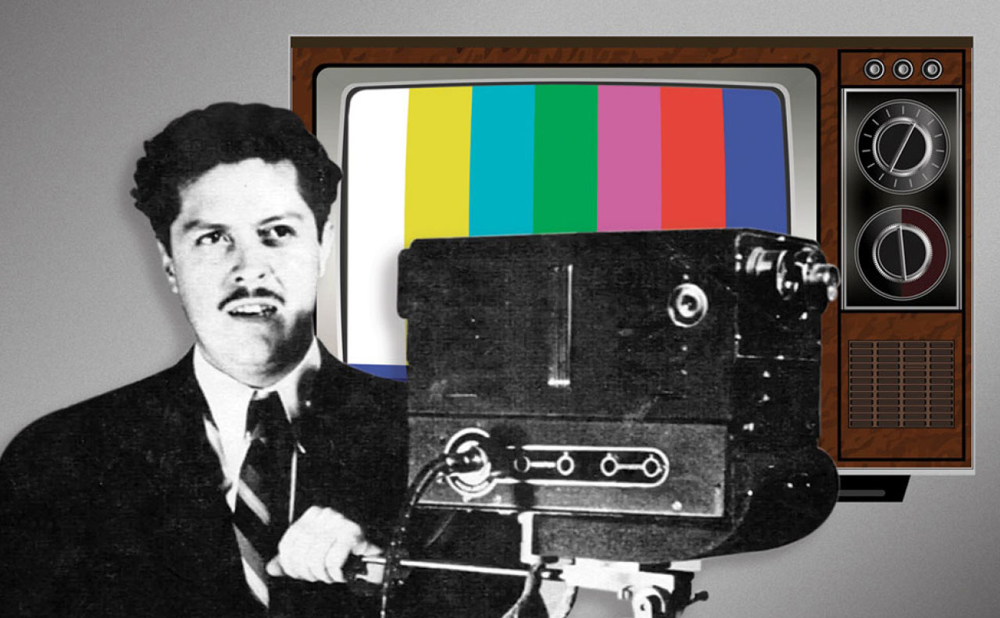

Todas sus obras e inventos
Camara con radios viejos
Cuando contaba con quince años de edad, Guillermo construyó su primera cámara de televisión con piezas de radios descompuestos;compuso una canción “Río Colorado” y con las regalías de esa canción mejoró sus ingresos y compró piezas para sus inventos.
Sistema tricromatico
A la edad de 23 años se le otorgó la patente de su “sistema tricromático de secuencia de campos, utilizando los colores primarios, rojo, verde y azul,para la captación y reproducción de las imágenes” por parte de México y Estados Unidos; de esa manera su invento empezó a cobrar fama en el resto del mundo.

Canal 5 y el sistema bicolor
Para 1952 inauguró comercialmente su estación televisora XHGC Canal 5 con equipo diseñado y construido por el; en 1962 patentó un nuevo invento:el sistema bicolor simplificado para la televisión a colores. Camarena puso en marcha ambiciosos proyectos de docencia, entre los que destaca la Telesecundaria.